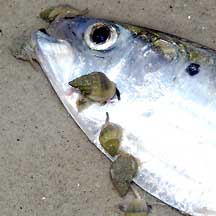
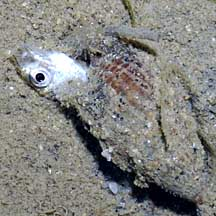

|
|
| shelled snails text index | photo index |
| Phylum Mollusca > Class Gastropoda |
| Whelks Family Nassariidae updated Aug 2020
Where seen? Whelks are commonly seen on many of our shores. On sandy or muddy shores and among seagrasses. Most whelks live in shallow waters, often in large groups. They are sometimes also called Nassa mud snails or Dog whelks. These small snails are among the busiest creatures you might come across at low tide, as they try to beat one another to any fresh dead animals left on the shore. When not foraging, whelks hide in the sand. Features: About 2cm. Whelks have tough thick shells. They have a long siphon and a large organ near the siphon (called the osphradium) that are used to detect chemicals released by dead animals. The fleshy siphon is extended out of a little notch in the tip of the shell. The siphon of a whelk can be as long as its body! They also use the long siphon to breathe as they burrow in the sand. They have long slender tentacles bearing eyes, and the back of the large foot has a pair of tentacles. Whelks can also drill through shells. |
 With a large barnacle on the shell. Changi, May 08 |
 Burrowing just beneath the sand with siphon sticking out. Changi, Aug 05 |

| Whelk food: Whelks are active
scavengers and often seen busily foraging in pools at the change of
the tides. A choice morsel such as a dead crab or fish is a magnet
for these snails which hurry as fast as they can to the feast. They
have been described as "extremely bold and agile". Whelk friends: Often, a tiny sea anemone hitches a ride on the shell of a whelk! The anemone probably benefits from the whelk's left overs, and avoids being permanently buried in the sediments. It is not certain if the whelk gets anything in return. Barnacles may sometimes also be found on the shells of large living whelks. Human uses: Although abundant, they are not much collected. Locally, they may be used as food or bait, and the shells sometimes used for shell craft. |
 Whelks cleaning out a recently dead snail while a hermit crab waits patiently. Tanah Merah, Feb 07 |
 Whelk Joy! Dead fish! Chek Jawa, Sep 03 |
 A small fish all to itself. Sisters Island, Jan 10 |
| Some Whelks on Singapore shores |


| Unidentified whelks on Singapore shores |
On wildsingapore
flickr
|
| Family
Nassariidae recorded for Singapore from Tan Siong Kiat and Henrietta P. M. Woo, 2010 Preliminary Checklist of The Molluscs of Singapore. ^from WORMS. +Other additions (Singapore Biodiversity Records, etc)
|
Links
References
|